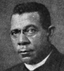
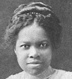
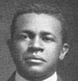
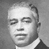

Collective Biographies of WomenAn Annotated Bibliography
Alison Booth
375.
Hammond, Lily Hardy. In the Vanguard of a Race. New York: Council of Women for Home Missions/Missionary Education Movement of the United States and Canada, 1922.
Search OCLC WorldCat for this title.
Search Google Books for this title.
Hammond, Lily Hardy. In the Vanguard of a Race. New York: Council of Women for Home Missions/Missionary Education Movement of the United States and Canada, 1922.
TOC: A Long Ascent; A Story of Service: Booker T. Washington and Robert R. Moton; A Doctor of Medicine: Dr. Charles V. Roman; Saving an Idea: Miss Nannie H. Burroughs; A City Pastor: Dr. William N. De Berry; A Believer in Happiness: Mrs. Janie Porter Barrett; A Builder of Prosperity: John B. Pierce; A Woman Banker: Mrs. Maggie L. Walker; “A Composer by Divine Right”: Harry T. Burleigh; A Light in a Dark Place: Miss Martha Drummer; Sure Foundations: Rev. James H. Dunston; A Speed of Flame: Joseph S. Cotter, Jr.
NOT:=male-female collective biography. African-American.
-
Booker T. Washington
-
Miss Nannie H. Burroughs
-
Mrs. Janie Porter Barrett
-
John B. Pierce
-
Harry T. Burleigh
Search OCLC WorldCat for this title.
Search Google Books for this title.